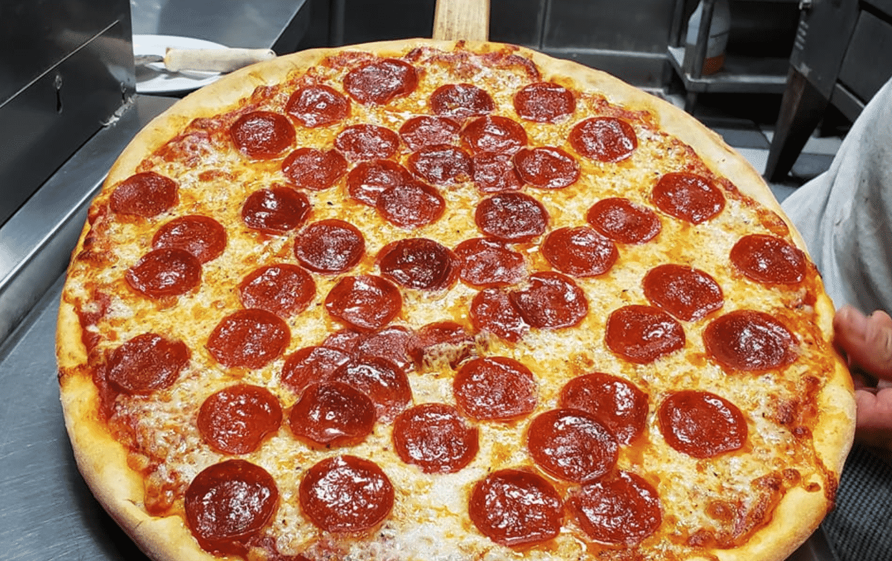

New York Style Pizza

Description
The ingredients and steps below can be used to create a delicious New
York style pizza. You can also additionally add and meats or other toppings
as you see fit, but cooking times may vary.
Ingredients
- Pizza Dough
- Tomato Sauce
- Shredded Cheese
- Pepperoni
- Olive Oil
Steps
- Heat oven to 400 degrees Fahrenheit
- Brush dough with olive oil
- Add tomato sauce to dough
- Add cheese on top
- Add pepperonis on top of cheese
- Bake for 18 minutes